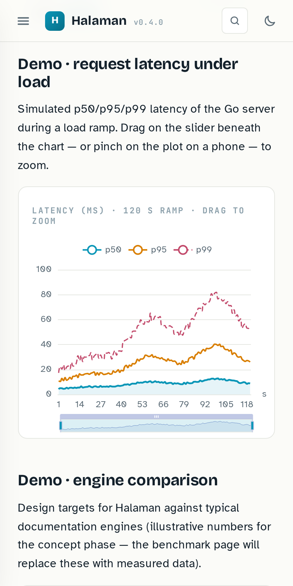
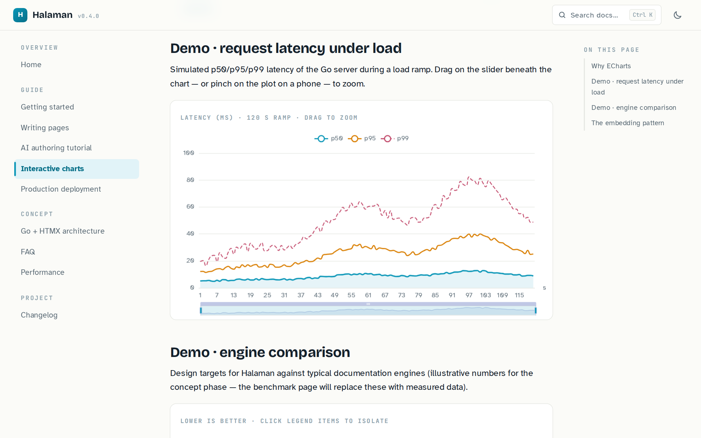

Documentation humans and agents can work with.
Pustaka is an open-source, HTML-first documentation framework designed for humans and AI agents. Agents can discover, understand, generate, update and validate interactive documentation programmatically.
Responsive
One page, every screen
Docs get read on phones in bed and tablets in meetings. Below are unretouched screenshots of the same page from this site, captured at two real viewport sizes. At 390 px the navigation collapses into a sheet and the chart re-flows to the column; from 1200 px up, sidebar, article and the “on this page” rail sit side by side.

charts · 390 × 780
charts · 1280 × 800Not a mobile version — the same page
Narrow this window to phone width and watch the layout reflow. Identical HTML, identical search index, identical charts. Dark mode is a CSS variable flip, so screenshots and live pages stay in sync.
Search
Answers before you finish typing
Titles, tags and full section text across every page, AND semantics with prefix matching. This box is not a mock-up: it calls the same engine as the ⌘K overlay.
Automation
Docs an AI writes — and a validator refuses to accept
This is the part Markdown can't give you. Every page obeys a written spec, so
pustaka check mechanically rejects a bad page: the model authors, the gate catches
its mistakes, and your readers never see them.
Write the prompt →
The four inputs a model needs, a copyable task template, and the correction loop that turns validator errors into a passing page.
Build a chart →
ECharts with theme sync, lazy init and swap-safe disposal — vendored locally, so charts work offline and in air-gapped deployments.
See the numbers →
Measured payloads, latency distribution and index build cost, with the commands to reproduce every figure.
Changelog →
One repo documents one product, so releases live in a single semver history — v0.1 to v0.6 is all there.
Performance
Measured, not claimed
Same-host figures from this repository. Loopback removes network latency deliberately: the question is what the engine costs, not what your CDN costs.
Method and caveats on the performance page.
Design
Why HTML-first
Interactivity is content
Filters, charts and tabs are ordinary markup — no plugin syntax, no iframes, no build step to render them.
One registry
assets/toc.js plus small part files. Add a page, add an entry — nav, search
and prev/next wire themselves.
Machine-checkable
pustaka check validates structure, links, asset prefixes and registry
consistency. Run it in CI; hand it to an AI.
No third-party requests
Fonts and ECharts are vendored. The docs render identically offline, air-gapped, or behind a strict CSP.
Contents
Explore the docs
Type to filter — the same live-filter component any page can use.
Getting started
Project layout, folders, the registry, and your first page in five minutes.
Writing pages
The component vocabulary: admonitions, tabs, code blocks, live filters.
Markdown to HTML
Convert, repair, register, and validate an existing Markdown document.
Page metadata
Optional chips, publication dates, update dates, and version applicability.
AI authoring tutorial
Build the prompt, feed the right context, run the correction loop.
Interactive charts
ECharts with theme sync, lazy init, and swap-safe disposal.
Nested sidebar
Recursive navigation with active paths, persistence, keyboard controls, and ARIA.
Interactive Sisflow ERD
Entity visibility, freeze mode, hand navigation, fullscreen, and SVG export.
Request workflow
Editable workflow stages with a fixed request path and a read-only viewer.
Org chart editor
Inline tree editing with add-child controls and branch collapse.
Kanban board
DOM-first lane board with drag-and-drop cards and JSON export.
Production deployment
Static host or Go binary behind a proxy, with a systemd unit.
Go + HTMX architecture
How serving, indexing and partial swaps fit together.
Performance
Measured latency, payloads and build times — plus how to reproduce them.
FAQ
Migration from Markdown, offline search, air-gapped charts, deployment.
Changelog
The documented product's release history, kept in strict semver.